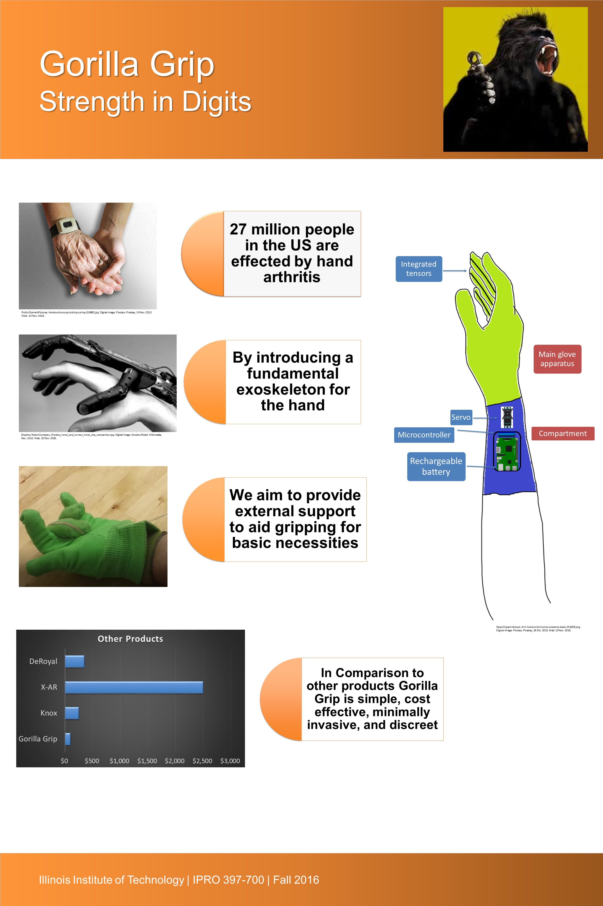

IPRO 397-700: Innovating Robotics Solutions that Serve User Needs
We asked our selves, how might we help those who need more strength in their grip because of medical conditions? More specifically for those
individuals who do not suffer with pain in joints due to external force. We researched our critical market, as to reach as many people as possible,
where arthritis seemed to be the most popular of the groups. We discovered how and why the intricate muscles in the hands work, and how and which ways
those muscles interact with the tissues around them. We investigated to what types of microcontrollers, electronic components, and any other types
of materials we would need to produce our final prototype. We took into account other functioning exoskeletons that had been successfully implemented
in the workplace and home, whereas we wanted to use a basis for our inspiration and ideas.

Promotional poster detailing the project
ITMT 492-593 Embedded Systems and Internet of Things (IoT)
People buy locks not only for a door or for a home, but also items such as cabinets or tool boxes.
The purpose of this project was to create a modular locking system that allows users to monitor the status (open/closed),
and use an input device (Bluetooth device) to lock all instances when leaving, and unlock when arriving.
At the heart of the product is an Arduino Uno for the logic and sensors to detect when and if the lock was to open.
The lock consisted of a solenoid and a circuit to drive that particular solenoid, and the permanent solderable project
board was designed to fit into small enclosure. The best communication device to use between the Arduino controller
and the input device was the Bluetooth RN-42 module from Parallax as it offered a basic TX and RX port to send serial
communication. The next step was to find a cell phone app to control the system, and after various trials with approximately 10 different apps,
the free Arduino Bluetooth Control for Android OS was determined to fit the need.